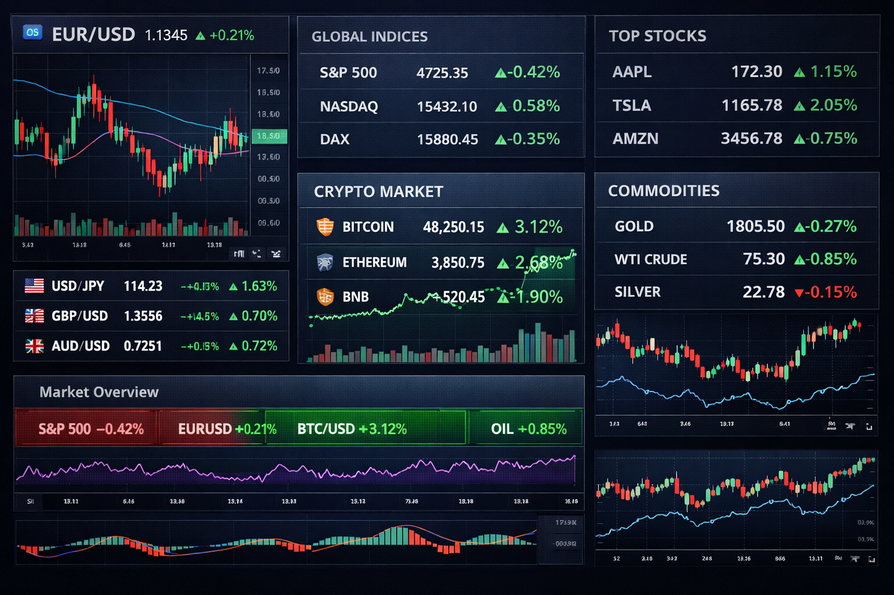
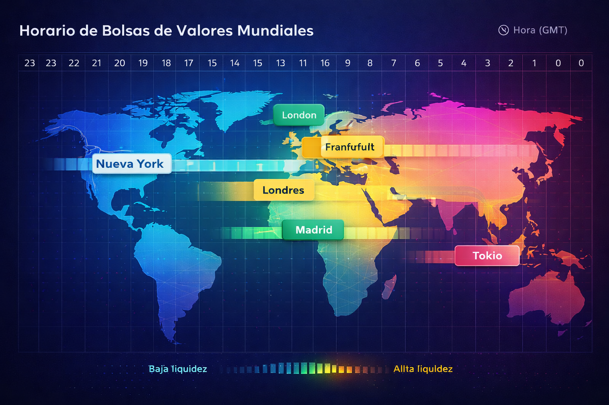

Tipos de mercado en trading: Forex, índices, acciones y cripto
Elegir mercado es elegir horario, costes, volatilidad y rutina. En vez de “probarlo todo”, aquí entiendes las diferencias reales para elegir uno con criterio y evitar errores típicos de principiante.

1 Qué significa “mercado” en trading
Un mercado es el entorno donde se negocia un tipo de activo (divisas, índices, acciones, cripto, materias primas). Aunque “todo se ve como un gráfico”, cada mercado tiene reglas de movimiento, horarios y costes distintos.
Si estás empezando, tu objetivo no es “el mercado que más sube o baja”, sino el que te permite construir un proceso: rutina, repetición y gestión del riesgo.
2 Comparativa rápida de mercados
| Mercado | Horario | Volatilidad | Mejor si… |
|---|---|---|---|
| attach_money Forex | 24/5 (sesiones Asia–Londres–NY) | Media | Buscas liquidez y repetición |
| candlestick_chart Índices | Sesiones (Europa/USA) | Media–Alta | Quieres horario “tipo trabajo” |
| apartment Acciones | Sesión del país (ej. USA) | Variable | Te interesa análisis por empresa |
| currency_bitcoin Criptomonedas | 24/7 | Alta / Extrema | Ya dominas riesgo y psicología |
| propane_tank Materias primas | Depende (oro/petróleo muy activos en USA) | Variable | Te encaja contexto macro |
En CDL, para principiantes, priorizamos mercados con estructura y liquidez. No porque “se gane más”, sino porque facilitan aprender proceso: entradas, invalidaciones y gestión de riesgo.
3 Horarios y sesiones: el detalle que la gente ignora
Muchos pierden dinero no por “mala estrategia”, sino por operar cuando el mercado está lento o cuando hay ruido. Las sesiones te ayudan a elegir horas con más liquidez y movimiento.
Suele ser más lenta en muchos pares. Útil para ciertos activos/pares específicos.
Alta liquidez. Suele ser la sesión más “productiva” en Forex.
Movimiento fuerte, sobre todo en aperturas y datos macro.

4 Costes reales: lo que pagas aunque no lo notes
Un mercado no solo se elige por “movimiento”. Se elige por costes y calidad de ejecución. Aquí está lo que debes entender:
- payments Spread: diferencia entre compra y venta. En activos líquidos suele ser menor.
- receipt_long Comisión: algunos brokers la cobran aparte del spread (común en cuentas “raw”).
- schedule Swap (overnight): coste/beneficio por mantener posiciones abiertas de un día a otro.
- swap_horiz Slippage: cuando tu orden entra peor por volatilidad o falta de liquidez (muy relevante en noticias).
5 Qué esperar de cada mercado (sin fantasías)
Forex
Liquidez alta y sesiones claras. Muy bueno para construir rutina.
- Ideal: pares mayores (EUR/USD, GBP/USD…)
- Peligro típico: noticias sin plan
- Clave: riesgo + repetición
Índices
Movimientos fuertes por sesión. Encaja si quieres horarios fijos.
- Ideal: aperturas/cierres y ventanas definidas
- Peligro típico: sobreoperar en rangos
- Clave: paciencia + timing
Acciones
Cada empresa es un mundo. Calendario y noticias importan mucho.
- Ideal: si te gusta analizar “historias” de empresas
- Peligro típico: earnings y gaps
- Clave: selección + contexto
Criptomonedas (cuidado)
24/7, volatilidad alta. Buen mercado… cuando ya dominas riesgo y cabeza fría.
- Ideal: reglas estrictas y riesgo bajo
- Peligro típico: FOMO y apalancamiento
- Clave: disciplina brutal
5B Lecturas relacionadas (para profundizar sin canibalizar)
Si estás empezando, no intentes dominar 10 cosas a la vez. Elige un subtema y construye rutina.
-
Forex para principiantes
Qué operar, sesiones y errores típicos.
-
Índices para trading
Ventanas “tipo trabajo” y estructura.
-
Acciones para trading
Earnings, gaps y selección.
-
Cripto para principiantes (sin FOMO)
Rutina 24/7, volatilidad y reglas.
-
Qué es el spread (y por qué importa)
Coste real en tu operativa.
-
Qué es el slippage
El “coste invisible” en volatilidad.
Nota: si aún no existen esas URLs, déjalas para después o crea páginas satélite cortas (sin competir con esta pilar).
6 Cómo elegir mercado (criterio profesional)
La mejor elección es la que te permite cumplir un plan sin destruir tu psicología. Tres criterios simples:
El mercado debe encajar con tu vida, no al revés.
Si aún no dominas riesgo, elige el mercado más “estable” para aprender.
Un mercado “simple” repetido 100 veces enseña más que 10 mercados a la vez.
7 Errores típicos por mercado (para evitarte meses de dolor)
- close Forex: operar noticias sin plan y aumentar lotaje “porque se mueve más”.
- close Índices: entrar en apertura sin esperar estructura y sobreoperar rangos.
- close Acciones: ignorar calendario (earnings) y comerse gaps sin control.
- close Cripto: FOMO, operar por impulso y usar apalancamiento como si fuera “normal”.
7B Fuentes y definiciones útiles (sin afiliados)
Si quieres definiciones claras de conceptos como spread o slippage, aquí tienes referencias externas para contrastar.
- • Qué es el spread y cómo se cobra
- • Qué es el slippage (deslizamiento)
- • Mercados principales para operar (visión general)
- • Cómo elegir un mercado (criterios)
Nota: enlaces externos editoriales = mejor credibilidad. Evita meter afiliados aquí.
8 Preguntas frecuentes
¿Qué mercado es mejor para empezar?
Normalmente, mercados líquidos y estructurados (pares mayores Forex o índices principales) facilitan construir rutina y controlar riesgo. Cripto suele ser más exigente por volatilidad y operativa 24/7.
¿Forex o índices: cuál elegir?
Si quieres liquidez constante y sesiones claras, Forex. Si prefieres ventanas “tipo trabajo” con movimiento fuerte por sesión, índices.
¿Qué costes mirar además del spread?
Comisión (si aplica), swap (overnight) y slippage en ejecuciones, sobre todo en volatilidad/noticias. Para entenderlo, revisa cómo funciona un broker.
¿Puedo operar varios mercados?
Se puede, pero al inicio suele ser ineficiente. Mejor dominar uno (activos, horarios y reglas) y luego diversificar.
¿Por qué cripto quema a tantos principiantes?
Por FOMO, exceso de apalancamiento y operar sin rutina. Si aún no dominas riesgo, cripto amplifica errores.
Sobre el autor (Condinerolibre)
Condinerolibre es una plataforma educativa centrada en trading realista, gestión del riesgo y proceso. Nuestro enfoque evita promesas: prioriza estructura, rutina y control de exposición.
Más información: Sobre nosotros · Contacto
Ya tienes el mapa. El siguiente paso es entender broker + ejecución + riesgo para no aprender a golpes.
Recomendado: Cómo funciona un broker → Riesgo y apalancamiento.